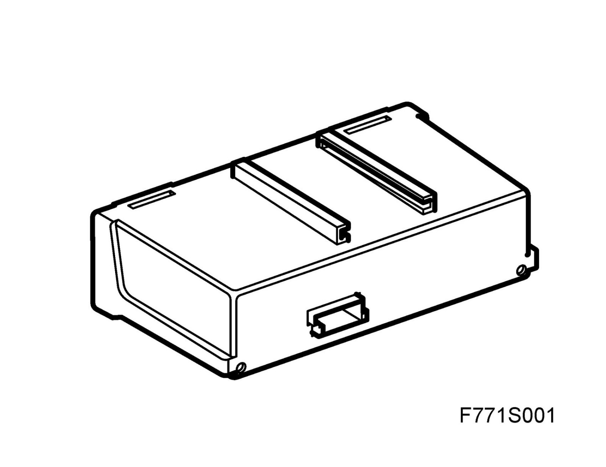
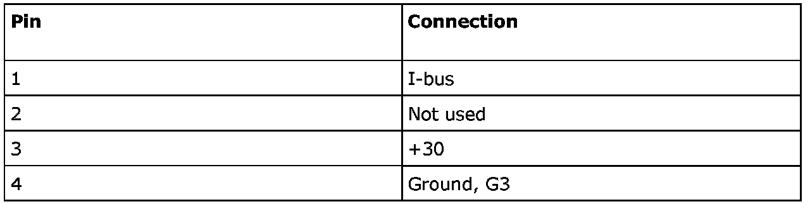
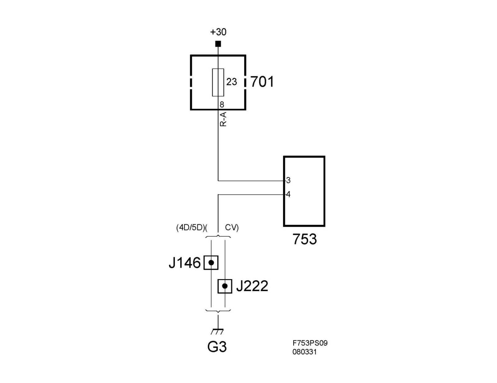

Tire Pressure Module: Description and Operation
Tire Pressure Monitoring Module (753)Position
Tire Pressure Monitoring Module (753)
Main function

The main function of the control module is to:
- Identify each wheel on the vehicle.
- Monitor tire pressure information and determine if a warning or alarm message it to be triggered.
- Transmit a warning or alarm message via the I-bus when criteria for such have been fulfilled.
- Monitor the tire pressure monitoring system if a fault arises, monitor its integral components and transmit information on this via the I-bus.
Type
The control module contains a radio receiver and a radio decoder in order to manage the signal information, and a microprocessor and a "CAN-driver" in order to be able to communicate with the I-bus.
Power supply, ground and bus communication

